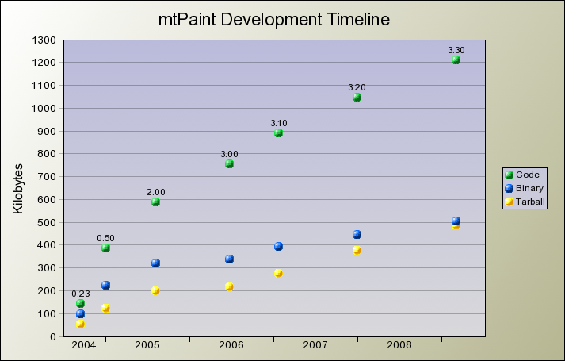
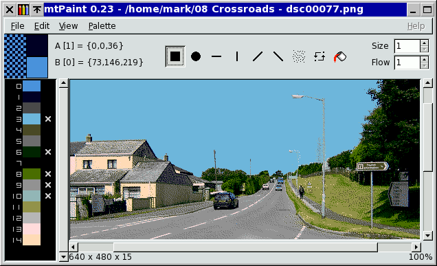

Rozhodnul jsem se napsat tuto pøíruèku, abych pomohl v¹em u¾ivatelùm mtPaintu vyu¾ít ho co nejlépe. Jako v¹echen software je mtPaint nástroj a pro jeho efektivní vyu¾ití budete muset studovat co dìlá a jak to pracuje. Jestli si pøejete pochopit nìkterá moje rozhodnutí ohlednì návrhu, bude vás mo¾ná zajímat, proè jsem vytvoøil mtPaint.
Poprvé jsem se zaèal zajímat o kreslicí programy a poèítaèovou grafiku v roce 1984. Jako mnoho mladíkù té doby mì poèítaèe zaujali díky hrám a tvùrèím èinnostem jako programování, kreslení a skládání hudby.
Poprvé jsem vidìl AMX Art na BBC Micro v té dobì a brzy poté AMX Super Art. V roce 1988 jsem zaèal pou¾ívat Neochrome na Atari ST a o rok pozdìji jsem pou¾il Animatic Sprite Master, který se mi velmi líbil, proto¾e jsem mohl experimentovat s animací.
Bìhem 90. let jsem si zaèal hrát s novými 24 bitovými RGB editaèními programy. Aèkoliv byly skvìlé pro úpravu fotografií, byl jsem frustrován jejich chabou podporou obrázkù zalo¾ených na paletì a pixelové kresbì. Jako odpovìï jsem napsal nìkolik malých kreslicích programù pro vyplnìní mezery na trhu, ale bohu¾el jsem nemìl èas na jejich poøádný vývoj a¾ do roku 2004.
4. Èervence 2004 jsem se rozhodl zaèít pøemý¹let nad vytvoøením vlastního kreslicího programu pro mùj GNU/Linux systém. Nìkolik týdnù jsem zva¾oval pou¾ívat ostatní volné kreslicí programy jako výchozí bod, ale rozhodl jsem se, ¾e mé po¾adavky se neshodují s ¾ádným z programù a ¾e bude lep¹í zaèít od nuly.
Programovat jsem zaèal 7. srpna a pou¾itelnou verzi jsem dal k dispozici 13. záøí 2004. Tento rychlý vývoj byl mo¾ný a¾ potom, co jsem pou¾il a studoval skvìlý program nazvaný mhWaveEdit, který napsal Magnus Hjorth na jaøe 2004. Stejnì jako je to skvìlý editor wav souborù, nauèil jsem se mnoho u¾iteèných vìcí z tohoto programu.
Napøíklad z dùvodu pøenositelnosti jsem v mtPaintu pou¾il GTK+ toolkit verze 1, nebo 2. To znamená, ¾e bude fungovat na mnoha volných operaèních systémech, i kdy¾ budou nìkolik let staré a pracují na star¹ím hardware s ménì výkonným CPU a men¹í pamìtí.
V¾dy jsem chtìl, aby byl mtPaint malý, spolehlivý, rychlý a jednoduchý na pou¾ití, proto¾e si myslím, ¾e to jsou vlastnosti, které by mìl mít kreslicí program pro mé potøeby. Nicménì mtPaint není korporátní program a není klonem jiných programù, tak¾e nemusí vyhovovat kreslicím potøebám ka¾dého u¾ivatele.
Dùle¾ité rozhodnutí, které jsem s mtPaintem udìlal, bylo jeho uvolnìní jako volný software pod GNU General Public Licencí. To dává v¹em u¾ivatelùm mtPaintu svobodu, která je výhodou pro nì i pro mne samotného. Jestli¾e nemáte informace o tìchto právech a pracujete na GNU projektu, tak silnì doporuèuji pøeèíst o nich tady: http://www.gnu.org/. Výsledkem pou¾ití této licence je pro mnoho lidí mo¾nost pøispívání nápadù a zdrojového kódu do mtPaintu a tím zlep¹ování programu.
Projekt mtPaint se bìhem èasu neustále roz¹iøuje a vyvíjí. Zde je graf, který popisuje tento proces:

Verze 0.23 bylo první veøejné vydání a vypadala takto:

Bìhem prvních 3 mìsícù vývoje mì zajímal pouze vývoj kreslicího programu s indexovanou paletou, tak¾e jsem totálnì ignoroval podporu RGB obrázkù. V tomto stádiu zrodu zde bylo k dispozici jen pár nástrojù a také u¾ivatelské rozhraní bylo velmi jednoduché. V tomto bodì bylo pro mne nejdùle¾itìj¹í mít dobøe vyøe¹enou práci s paletou, co¾ je to, co mnoho dne¹ních moderních programù zanedbává. Napøíklad jsem chtìl mít rychlou a jednoduchou mo¾nost ochránit vybrané barvy na plátnì, tak jsem vymyslel jednoduchý systém køí¾kù vedle barev v místì palety.
Po verzi 0.30 jsem se rozhodl, ¾e se mi program opravdu líbí a ¾e ho chci pou¾ívat na systémech Windows, kdy¾ nemám pøístup k mým oblíbeným volným operaèním systémùm. Tento úkol byl docela jednoduchý díky GTK+ portovanému na Windows a zdrojovým kódùm mtPaintu v èistém jazyce C, tak¾e jsem jen potøeboval jednoduché MinGW vývojové prostøedí.
Poté, co jsem dosáhl svých cílù s indexovanou paletou, jsem se rozhodl, ¾e chci mít mo¾nost upravovat digitální fotografie a jiné 24 bit RGB obrázky. Také jsem pøidal nìkolik nástrojù, jako vlkádání textu a rozmazávání.
To bylo bìhem této fáze vývoje, kdy jsem zaèal dostávat odezvy od lidí o jejich zku¹enostech s mtPaintem a jak bych mohl nìkteré vìci zlep¹it. Podrobné informace o tìchto pøíspìvcích najdete v sekci CREDITS souboru README. Aèkoliv primárnì vyvíjím mtPaint pro své vlastní potøeby, nemám monopol na dobré nápady, tak¾e tato pomoc je velice vítána.
Verze 2.00 byla velmi vylep¹ena a to byl také dùvod, proè jsem pøeskoèil verzi 1.xx. Pøechod z verze 0.97 na 1.00 by neodpovídal obrovským umìnám ve fukcionalitì díky implementaci mo¾ností vrstev. Vrstvy jsou velice u¾iteèné pøi vytváøení kreseb, tak¾e jsem byl velmi potì¹en jejich implemetací.
Verze 2.00 byla uvolnìna 7. srpna 2005 jako výroèí zahájení práce na mtPaintu.
Velká zmìna ve verzi 3 je pøedstavení kanálù. Zva¾oval jsem zavedení kanálù u¾ ve verzi 2.00, proto¾e jsou velmi u¾iteèné, ale nakonec jsem usoudil, ¾e jsou pro mùj jednoduchý mozek pøíli¹ komplexní, abych je správnì implementoval.
Na¹tìstí pro mì a ostatní u¾ivatele mtPaintu pøi¹la pomoc od jiného programátora Dmitrije Grosheva, který byl schopen naimplementoval alfa kanál, výbìr a maskové kanály. To vyvolalo obrovské pøepsání kódu, co¾ vy¾adovalo skok z verze 2 na 3.
Aèkoliv jsem pou¾íval kód jiných lidí pro rùzné èásti mtPaintu, tak toto byl první pøípad, ¾e nìkdo jiný zaèal pracovat pøímo na zdrojovém kódu. V minulosti jsem pou¾il kód pro vìci jako ini soubory a kvantizaci barev, ale to byl volný software, který jsem nalezl na internetu a upravil dle mých potøeb.
Dal¹í dùle¾itý krok ve verzi 3 bylo pøepracování u¾ivatelského rozhraní, menu a nástrojových li¹t, které jsou nyní více úkolovì zamìøené.
V neposlední øadì jsem se rozhodl napsat tuto pøíruèku. Díky vzrùstajícím mo¾nostem a v¹estrannosti mtPaintu jsem do¹el k názoru, ¾e je èas vytvoøit plnì ilustrovaný HTML dokument, který vysvìtlí, jak v¹e pracuje.
Navzdory v¹em tìmto pøídavkùm zùstává jádro mtPaintu malé, spolehlivé, rychlé a jednoduché k pou¾ití.
Verze 3.00 mtPaintu byla moje poslední jako správce z dùvodu nedostatku èasu a energie.